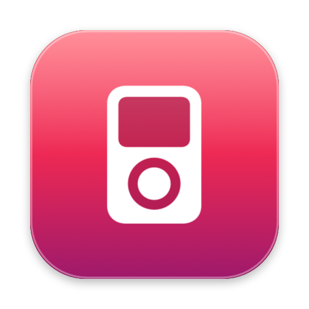
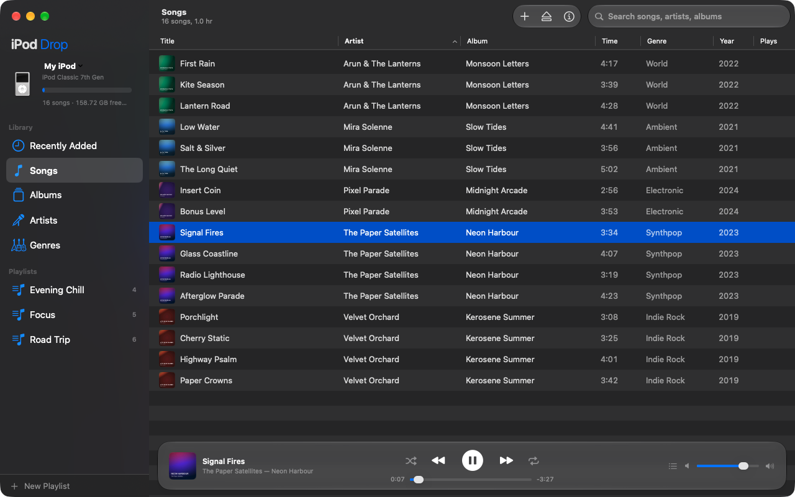
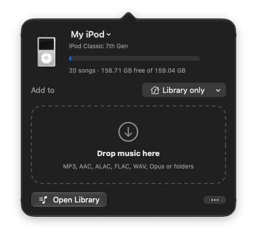
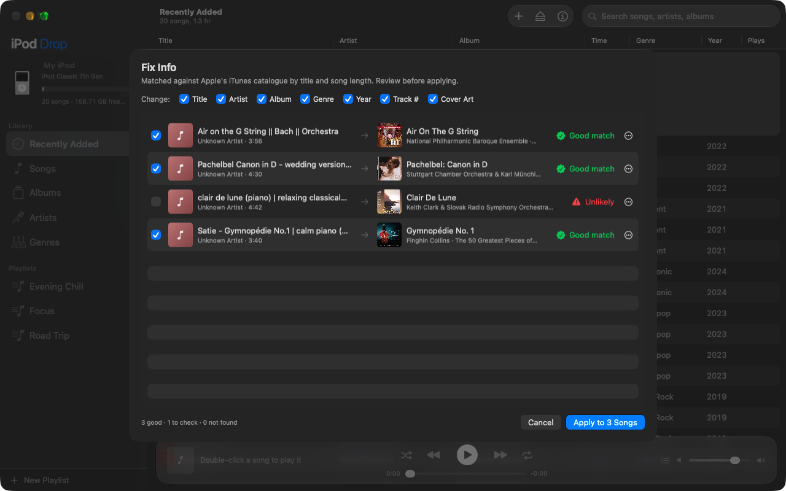
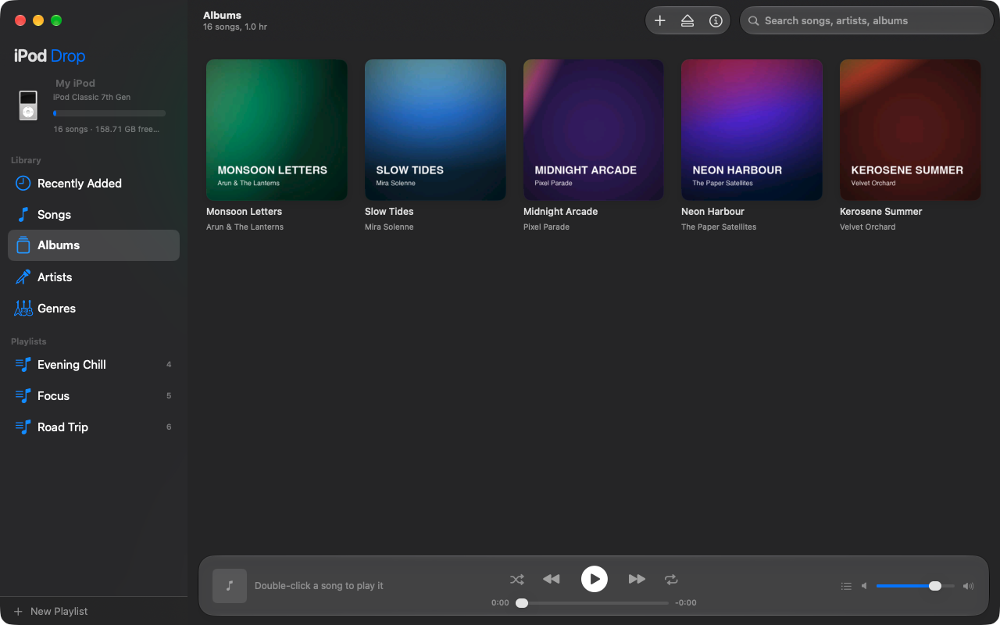

Drag and drop music onto your classic iPod from your Mac. No iTunes, no syncing, no fuss.
Free and open source · macOS 14 Sonoma or later · Apple silicon

Screenshots use a demo library with made-up artists and silent tracks.
iPod Drop lives at the top of your screen. Drag songs or whole folders onto its icon and they're on your iPod, no window needed.

Songs with messy titles like "Bach || Orchestra (Official Audio)"? Fix Info looks them up in Apple's music catalogue and suggests the real title, artist, album, year and cover art.

Albums with cover art, artists, genres and playlists, plus a built-in player that plays straight from the iPod. Right-click anything for every action.

A native Mac app that lives in your menu bar, with a full library window when you want it.
Drop songs or whole folders on the menu bar icon or the library window, straight into any playlist.
FLAC, WAV, Opus and more are converted automatically. Lossless stays lossless as Apple Lossless.
Browse songs, albums, artists and genres. Create playlists, edit song info and remove songs.
Fill in titles, artists, albums, genres, years, track numbers and cover art from Apple's catalogue, for a few songs or your whole library. You review every change.
Play songs right from the iPod, with Up Next, shuffle, repeat and your keyboard's media keys.
One program writes to the iPod at a time, duplicates are skipped, and ejecting is always clean.
See the song being copied, how many files are done out of the total, and the percentage, with an iTunes-style moving bar.
Songs already on your iPod are skipped instantly, several files are prepared at once, and each song is checked once instead of five times.
Songs you remove are kept on your Mac for 30 days. Add them back from Recently Removed, and your iPod's library is backed up before every change.
Rate a song 1 star on your iPod and it lands in a "Marked for Removal" playlist right away. Listen again, change your mind, or let iPod Drop remove it next time you connect.
See what you added today, yesterday or any other day, each under its own date header.
Drag the sidebar, Info panel and Artists or Genres lists to the width you like. Everything fits, even in a small window.
Checks for new versions once a day and installs them when you say so. Updates are signed, so only real releases install.
If saving was cut off, restore the previous library or keep what's there, instead of a stuck iPod.
If something goes wrong, Help › Send Error Report opens an email with the details and log. You read it before sending.
Mac-formatted and Windows-formatted iPods both work.
| iPod | Status |
|---|---|
| iPod classic (6th, 6.5th, 7th generation) | Works |
| iPod (3rd generation), iPod photo, iPod video (5th, 5.5th) | Works |
| iPod mini (1st, 2nd generation) | Works |
| iPod nano (1st to 4th generation) | Works |
| iPod nano (5th generation) Needs one sync with Finder or iTunes first | Should work |
| iPod nano (6th, 7th generation) | Being tested |
| iPod shuffle, iPod touch | Not supported |
Works on macOS 14 Sonoma, macOS 15 Sequoia, macOS 26 Tahoe and later, on Apple silicon Macs. iPod Drop isn't notarized by Apple yet, so macOS asks you to confirm the first time.
iPod-Drop.dmg, open it, and drag iPod Drop into Applications.brew install ffmpeg (using Homebrew). Then plug in your iPod and drop some music on it.It's free and always will be. If it brought your old iPod back to life, you can buy me a coffee.
Buy me a coffee